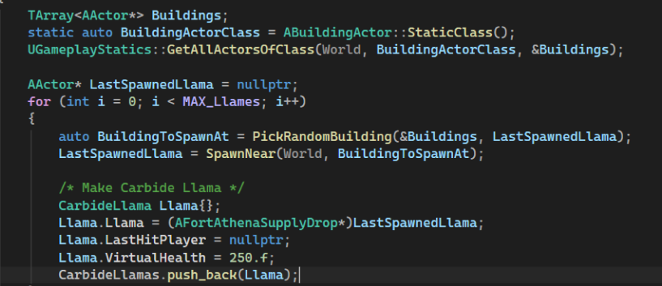

Wat is broncode?
De tekst die een programmeur schrijft noemen we broncode. Broncode wordt vaak geschreven met een erg stricte code grammatica, ook wel syntax genoemd. Een compiler of interpreter converteren deze dan om in een uitvoerbaar programma.

Wat doet een compiler?
Een compiler kijkt eerst of de syntax die geschreven is correct is, als er een complicatie is geeft de compiler een foutmelding terug. Als er geen foutmeldingen zijn, dan zet de compiler meestal deze code om naar machinecode of naar een tussenformaat ookwel bytecode genoemd.
Nadat de compiler klaar is met het omzetten, wordt de linker ingezet om alle onderdelen aan elkaar samen te voegen tot een uitvoerbaar programma. Als de linker een symbol niet kan vinden wordt er ook een foutmelding teruggegeven.
VEREENVOUDIGD VOORBEELD
int result = 5 + 3;
// De compiler analyseert de broncode.
// Vervolgens wordt deze vertaald
// naar instructies voor de CPU.